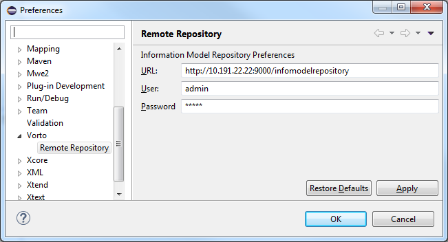
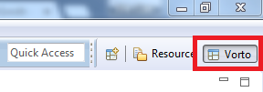
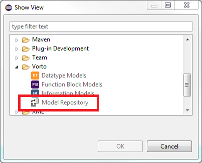
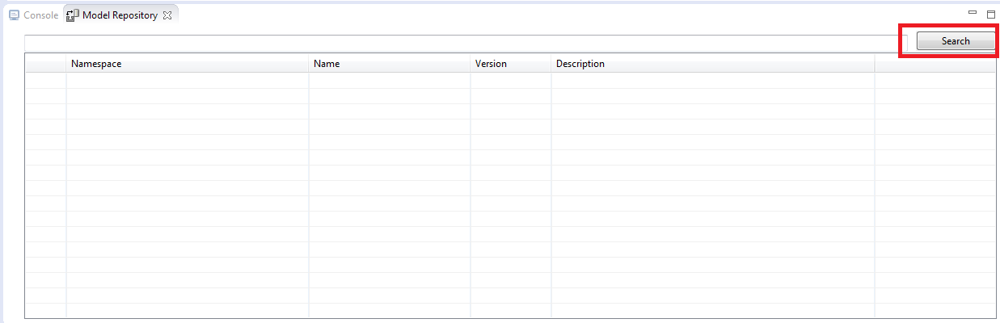
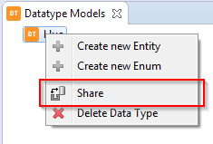
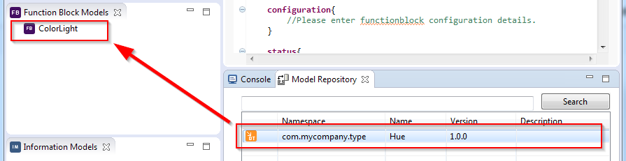
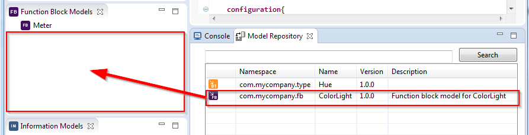

In the current development branch, the following functionalities have been added to the Vorto toolset to enable developers to seamlessly integrate with the Model Repository:
Click here to watch a demo video
Before we can use the toolset integration with the Model Repository, we must add the URL of the Model Repository in the preferences. We must also add the username and password if we want to be able to save models to the repository.

There are two ways to add the Model Repository view. You can either switch to the Vorto Perspective, or you can manually add the Model Repository view to the workspace.
Click the Vorto perspective button on the upper right corner. When the perspective change is completed, you’ll see the Model Repository view on the bottom right corner along with the Console


Searching for models is as simple as typing a filter and clicking the Search button. Without a filter, Search will return ALL models in the Model Repository.

After you have created your model, you can open the context menu of the project (by right clicking on it) to see the Share button. This require credentials to be entered in the Vorto preferences first.

Dragging a shared model from the Model Repository view and dropping it to a local model project will add the shared model to the list of references of the local model project. It will also download the shared model from the Model Repository to the shared folder of the local model project.

Dragging a shared model from the Model Repository view and dropping it to one of the three model views (Datatype Models, Function Block Models, Information Models), and not to any particular local model project will import the shared model as a project to the local workspace.
